“내일 쉬어?”
달력이 대답해요
근무 패턴을 한 번만 넣으면 근무표, 알람, 출퇴근 날씨가 알아서 따라와요. 가족은 같은 달력을 보고 언제 같이 쉬는지 바로 알아요.
▶ 안드로이드 앱 받기4조2교대3조2교대상주직접 만든 패턴불규칙
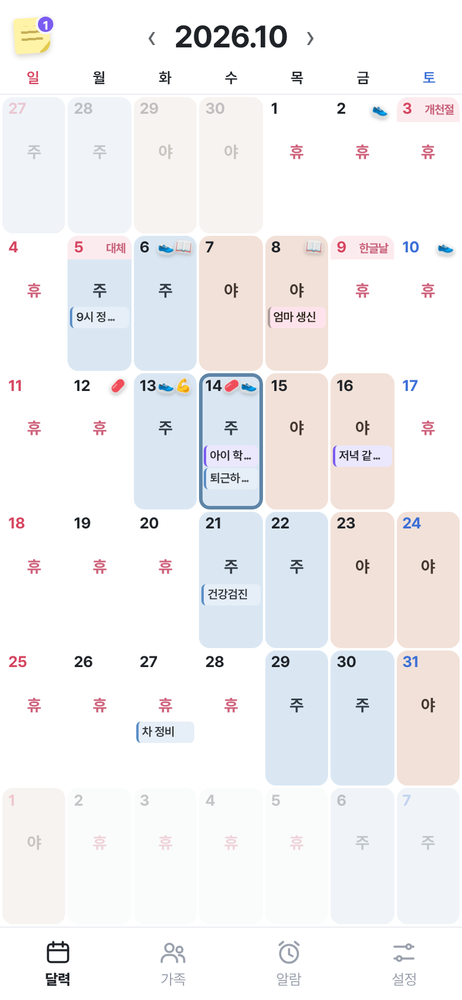
근무표 달력
오늘 근무부터
한눈에
패턴과 오늘 근무만 고르면 몇 년 치가 채워져요. 바뀐 날은 눌러서 그날만 고치면 돼요.
- 공휴일 · 명절 · 대체공휴일 · 회사 휴무일 자동
- 바꾼 근무엔 빨간 점
- 조가 바뀌어도 "이 날부터 새 패턴" — 지난 근무는 그대로
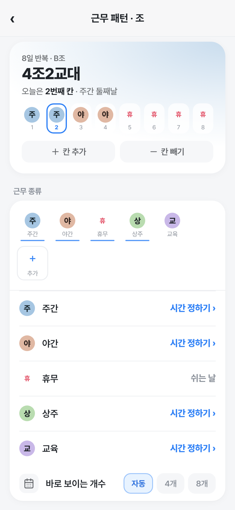
날짜 창
하루에 필요한 건
한 화면에
날짜를 누르면 그날 근무, 날씨, 메모, 스티커가 한곳에 모여요. 옆으로 밀면 다음 날로 넘어가요.
- 근무 바꾸기 · 여러 날 칠하기
- 그날 출퇴근 날씨 · 가족 메모
- 나만 보는 메모 · 할 일 · 시간 알림
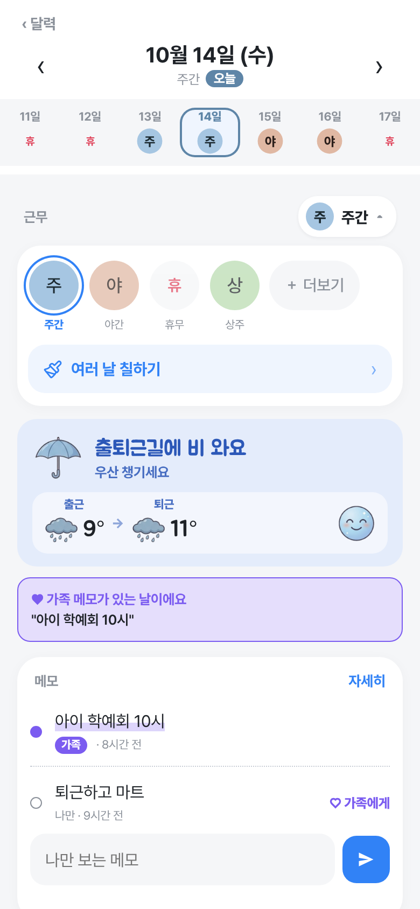
출퇴근 날씨
집을 나설 때와
돌아올 때 날씨
그날 근무 시간에 맞춰 출근길 · 퇴근길 날씨를 따로 알려 줘요. 야간이면 밤 날씨를요.
- 비 · 눈 오면 "우산 챙기세요"
- 추위에 맞춘 오늘 옷 한 벌
- 시간별 날씨와 동네 미세먼지
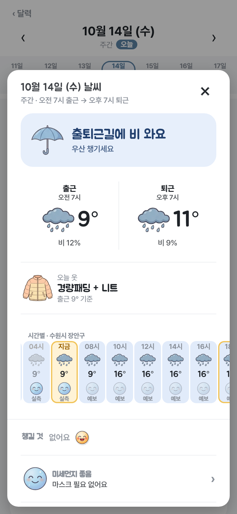
근무 맞춤 알람
쉬는 날엔
조용히
주간엔 5시 반, 야간엔 오후 4시. 근무가 있는 날만 울리고, 끄면 바로 출근길 날씨가 떠요.
- 점점 커지는 소리 · 다시 울림
- 내일 하루만 "이번만 끄기"
- 울리기 5분 전 미리 알림
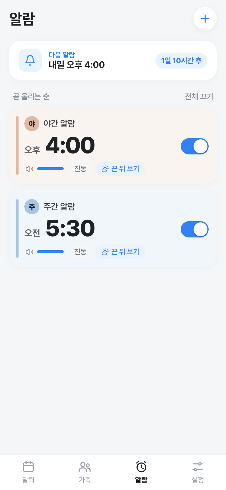
가족이 함께
지금 누가 근무 중인지,
언제 같이 쉬는지
초대 코드 하나로 가족 폰에도 내 근무표가 그대로 보여요. 아이 · 부모님 일정도 같이 넣을 수 있어요.
- 가족 시간표로 이번 주 한눈에
- 다 같이 쉬는 날 · 낮에 같이 쉬는 날 자동으로
- 아이 등원 · 하원 날씨까지
- 구글 계정을 연결하면 폰을 바꿔도 그대로
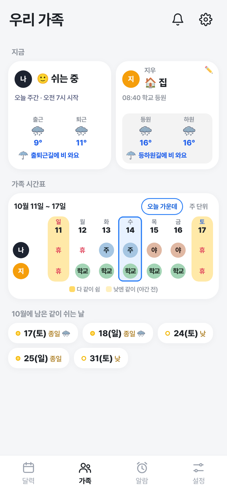
근무 요청
"이날 쉬어 줄 수
있어?"
가족이 근무자 달력에서 날짜를 눌러 바꿔 달라고 요청해요. 근무자는 수락 · 거절 · 답장으로 답하고, 수락하면 근무표에 바로 들어가요.
- 여러 날을 한 번에 골라서 요청
- 한마디 같이 보내기 · 답 기다리는 중 · 취소
- 앱을 꺼 둬도 알림으로 와요
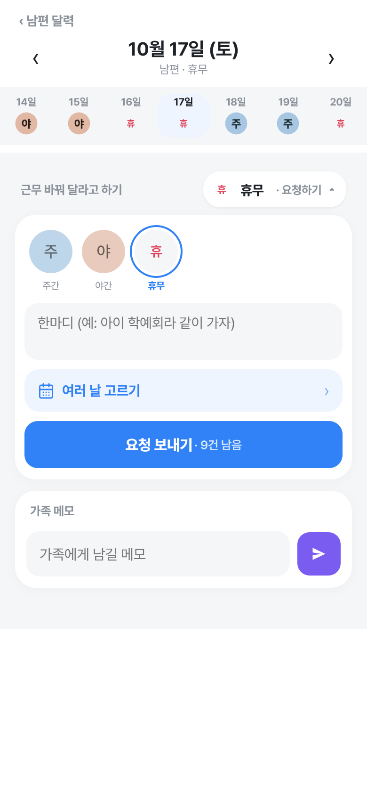
스티커
약 먹었는지,
운동했는지
날짜에 스티커를 붙여 습관을 남겨요. 반복으로 깔아 두고 할 때마다 누르면 한 달 통계로 돌아볼 수 있어요.
- 약은 하루 몇 번 · 시각마다 알림
- 쉬는 날만 · 근무 날만처럼 근무에 맞춰 깔기
- 학원 · 운동은 시간과 동네를 넣으면 그 시간 날씨까지
- 아이 사진으로 나만의 스티커
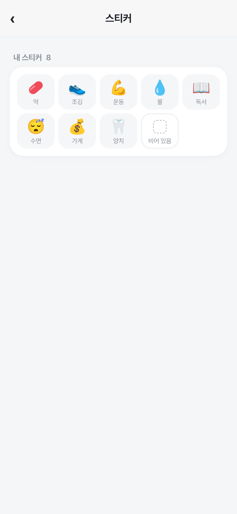
메모 · 포스트잇
하루를
가볍게 남겨요
날짜엔 메모, 달력 위엔 이번 달 포스트잇. 할 일은 체크하고, 다 끝나면 가족에게 알려 줘요.
- 매달 반복 메모 (1일 · 말일 · 근무 조건)
- 가족에게 보이는 메모는 보라색
- 포스트잇은 끌어서 순서 바꾸기
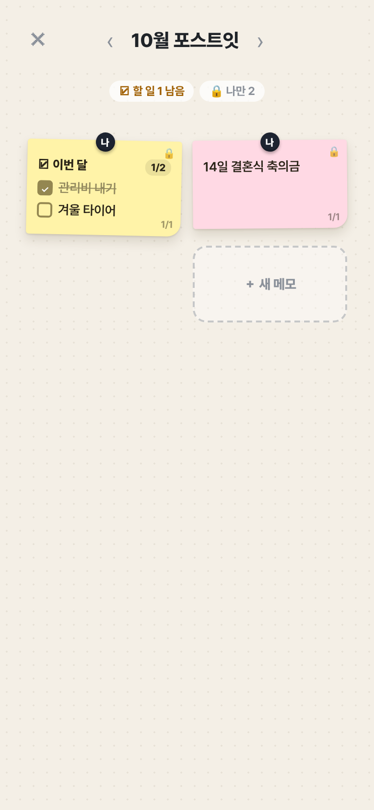
홈 화면 위젯

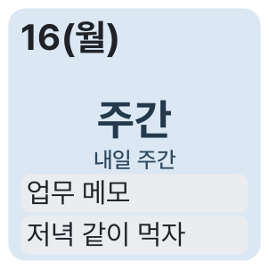
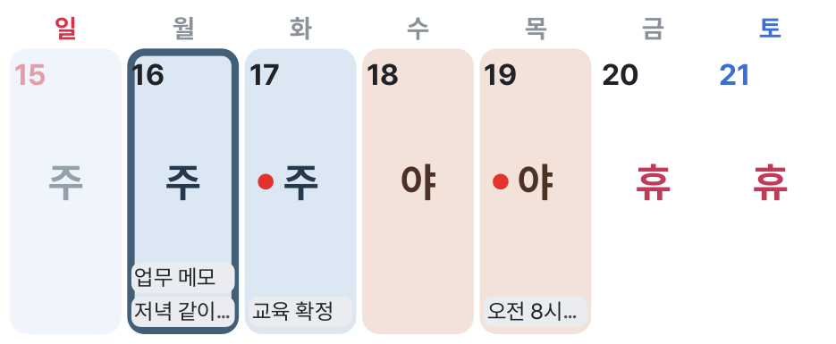
필요한 사람만 켜는 기능
업무 메모인수 · 인계 · 지시를 날짜마다 칸별로
근무 통계 · 수당야간 · 연장 횟수와 이번 달 예상 수당
구글 드라이브 백업폰을 바꿔도 근무표 · 메모 그대로
처음 설정은 1분
1근무 형태 고르기4조2교대 · 3조2교대 · 상주 중에서, 아니면 직접
2오늘 근무 누르기오늘이 주간인지 야간인지만 누르면 앞뒤가 채워져요
3출근 알람 켜기근무별로 시각을 정하면 쉬는 날엔 조용해요
이번 달, 언제 쉬어?
근무표 한 장으로 나도, 가족도 같은 답을 봐요.